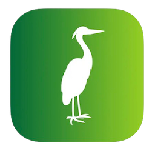

Olá, I'm Bruna Baudel
Software Developer & Digital Nomad
I'm passionate about creating innovative mobile experiences and exploring emerging technologies like VisionOS. With a background in Computer Science and a love for travel, I bring a global perspective to everything I build.
My Journey
Discovering Technology
I've been fascinated by technology since childhood. When my father brought home a Windows 95 PC, I began building my first HTML websites, including one to store lyrics of my favorite songs.
Computer Science Education
At university, I immersed myself in Computer Science, studying algorithms, linear algebra, compilers, and various programming languages. This period provided the foundation for my technical expertise.
Mobile Development Beginnings
My brother invited me to take Android classes with him, introducing me to the world of mobile development. This sparked my interest in building apps for smartphones.
Startup Co-Founder
I co-founded a startup called Procura Tecnologia and created eVita, an app to check medicine interactions with over 1 million entries. This project introduced me to iOS development, and I taught myself Objective-C and the macOS environment.
Professional Android Development
I began my professional career in Android development, working with skilled people who taught me much about the Android SDK and Java. I also created Dustdog, a mobile game using libGDX for both Android and iOS.
Accenture
At Accenture, I worked with senior experts on projects for Vale do Rio Doce, one of the world's largest mining companies. I developed dashboards using AngularJS, JavaScript, HTML/CSS, and maintained middleware with Java EE and Spring Framework.
Travel & Freelance
I spent time living in Los Angeles, studying at UC, and traveling across the US. This year also marked my transition to professional iOS development as I began freelancing for a credit card company, building their app from scratch using Swift and UIKit.
The Netherlands & Beyond
I moved to the Netherlands, continued freelance iOS development, and navigated through the pandemic. In 2021, I worked remotely from Sri Lanka and trekked the Annapurna Circuit in Nepal, one of the most challenging experiences of my life.
Code From Anywhere
Working with Code From Anywhere, I expanded my skills in React Native, ReactJS, TypeScript, and NodeJS. I built the Find ClarityAI iOS app using SwiftUI and whisper.cpp while traveling to Bali, Thailand, and Brazil.
Apple Developer Academy
I joined the Apple Developer Academy at Unina in Italy, met Tim Cook, and connected with the wider iOS developer community during my four-month stay.
Klippa
I joined Klippa as a mobile developer in February 2024, working with document processing and OCR technology to enhance mobile and web experiences.
Future Vision
My next big goal is ... ?
My Skills
iOS Development
Experienced in Swift, SwiftUI, UIKit, and iOS frameworks. I've created multiple commercial apps and am exploring VisionOS for Apple's Vision Pro.
Web Development
Proficient in React, Next.js, TypeScript, HTML/CSS, and various JavaScript frameworks for building responsive and dynamic web applications.
Mobile Game Development
Experience creating cross-platform mobile games using libGDX and other game development frameworks for both iOS and Android platforms.
AI Integration
Implementing AI technologies into mobile apps, including voice recognition with whisper.cpp and exploring computer vision applications for next-gen experiences.